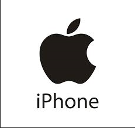
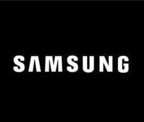

There are lots of Mobile Devices. Here are some Examples:-
1. Iphone
2. Samsung
3. Google
4. Oppo
5. Sony
History about Mobile Phones. Iphone first released in the United States in 2007 the first mobile device was called Iphone 2G
Samsung was founded as a grocery trading store on March 1, 1938, by Lee Byung-Chull. First samsung phone SH-100
Google pixel phones have not always been around. It all started with the Nexus series of phones for Google way back in 2010. First Google phone came out in October 2016.
The brand name "Oppo" was registered in China in 2001 and launched in 2004.
The first Sony phone was CM-H333. Sony was founded by physicists Masaru Ibuka and Akio Morita.
Iphone (APPLE) is the most successful company out of the 5 phones above. Iphone was established in January 2007 and the original iphone was introduced by Steve Jobs.